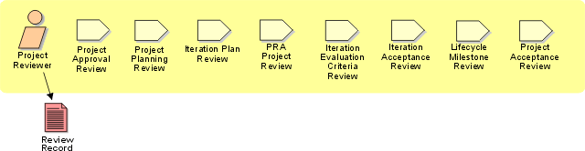

Role:
Project Reviewer
The project reviewer role is responsible for evaluating project
planning artifacts and project assessment artifacts at major review points in
the project's lifecycle. These are significant review events because they mark
points at which the project may be cancelled if planning is inadequate or if
progress is unacceptably poor.

Staffing
The project reviewer role requires many years of business
(including contract formulation and negotiation), technical, and software
project management experience, and the individual who fills this role is chosen
because of demonstrated decision-making ability at the operational management
level. The project reviewer must have an excellent understanding of risk
management principles and must be skilled at estimation in an environment with
incomplete or fuzzy information.
Copyright
© 1987 - 2001 Rational Software Corporation
|  Roles and Activities >
Roles and Activities >
 Project Reviewer
Project Reviewer